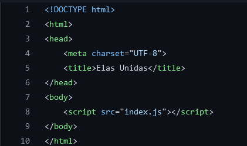

Desenvolvimentp web
Oque é html?
HTML is the standard markup language for creating Web pages.
- HTML stands for Hyper Text Markup Language
- HTML is the standard markup language for creating Web pages
- HTML describes the structure of a Web page
- HTML consists of a series of elements
- HTML elements tell the browser how to display the content
- HTML elements label pieces of content such as "this is a heading", "this is a paragraph", "this is a link", etc.

Oque é css?
Css é a linguagem que nos usamos para estilizar uma pagina web
- CSS stands for Cascading Style Sheets
- CSS describes how HTML elements are to be displayed on screen, paper, or in other media
- CSS saves a lot of work. It can control the layout of multiple web pages all at onc
- External stylesheets are stored in CSS files

Oque é JS?
JavaScript é uma linguagem de programação interpretada estruturada, de script em alto nível com tipagem dinâmica fraca e multiparadigma. Juntamente com HTML e CSS, o JavaScript é uma das três principais tecnologias da World Wide Web.
- JavaScript is the world's most popular programming language.
- JavaScript is the programming language of the Web.
- JavaScript is easy to learn.
- This tutorial will teach you JavaScript from basic to advanced.

Tabela Exemplo
| hora |
min |
valor |
total |
ano |
| 15 |
45 |
25 |
669,37 |
2021 |
| 15 |
45 |
100 |
2677,50 |
2022 |
| 20 |
0 |
25 |
850,00 |
2023 |
Tabela de Atributo
| Atributo |
Descrição |
Exemplo |
| P |
cria um paragrafo |
<p > this is a paragraph </p> |
<li> |
Utilizada para fazer tópicos em listas |
<li > ameixa </li> |
<h1> |
Para criar títulos |
<h1> Esse é o título</h1> |